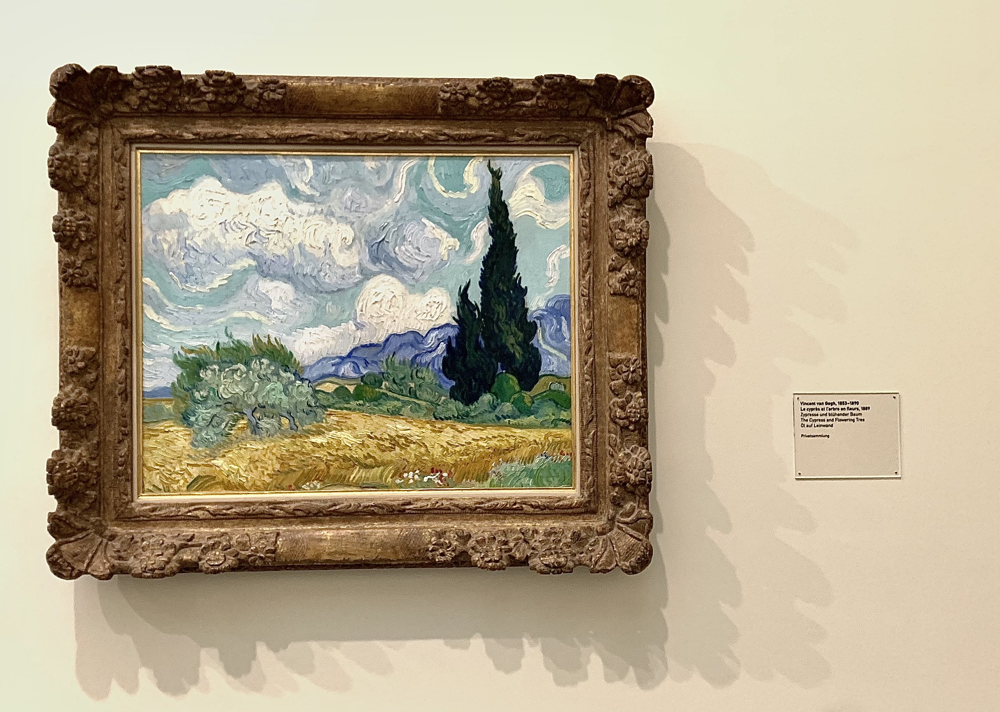
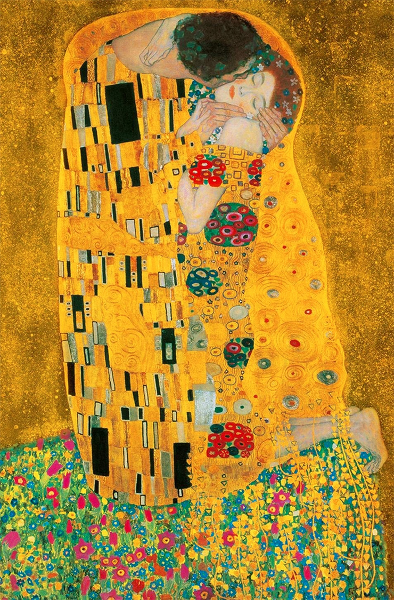

Welcome on my profil page. I am curently a student of the GBBA of ESSEC Business School in France. As a practice I created this website and I hope you will enjoy it !
Paris, France
2020 - 2024
Bachelor of Business Administration (BBA) in english track.
Lausanne, Switzerland
2018 – 2020
Bachelor of engineering, two years of specialization in "Microtechnology" and "Environmental Science and Engineering".
Toulouse, France
2016 - 2018
Scientific Baccalaureate, mention "Très Bien" (highest distinction) with mathematics focus, and additional English and Art classes.
Indianapolis, United-States
Aout 2015 - Novembre 2015
First term of high school done in total immersion in an American high school.
I love art in general: I love to walk around exhibitions or learn about the art world in my spare time. My favorite artists are: Van Gogh and Klimt.
Here is a picture of one of my favorite paint of Vincent Van Gogh, "Le Cyprès et l’arbre en Fleurs". I took it myself at the Kunsthaus Museum, in Zurich Switzerland. The second painting it the famous "Le baiser" of Gustave Klimt. although imperfect, this majestic painting is his greatest masterpiece.
 I love music: on a daily basis I listen to very varied styles of music, but my favorite artists, who are Pomme and Ben Mazué, have a more melancholy and poetic style. I did 8 years of piano, which I continue to practice when I have the time and a piano at hand.
I love to travel. Actually, most of the money I own goes into my travels. Also, I really adore speaking English, meet new persons and cultures. But what I really love the most is to admire what nature has us to offer.